Camouflage is a difficult concept to grasp: as a concept, camouflaged is camouflaged. Even in its etymology, we find only a disorienting haze. Michael Taussig, in “Zoology, Magic, and the War on Terror,” describes this camouflaged etymology:
Roy Behrens claims it is derived from sixteenth-century French, being the name of a practical joke that involved setting fire to a paper cone and holding the other, smoking, end against the nose of someone asleep in a chair. Three centuries later camouflet referred to a lethal explosive set into tunnels so as to suffocate an enemy force, presumably making its way secretly underground. By some bizarre set of connections this word then comes to signify make-up as with cosmetics and costumes for a theatrical role or a disguise for criminals, the word finally making it into English during World War One, referring to disguise in warfare but also, at the same time, to a wide range of blendings and deceptions, ranging from camouflaged eggs, meaning scrambled, to the act of bluffing. This is a word with a good deal of signifying power. Like a sponge it sucks up most everything. What does that tell us about the shapes and figures of our world? (Taussig 2007: 9-10)
We can, however, follow the term through a semantic bottleneck during the first world war, where the French began calling the practitioners of what was already becoming an established as a military art the camoufleurs. This is the moment where the English term camouflage, and other European derivatives thereof, came into being. Moreover, the rapidity with which the word ingrained itself into both military and everyday usage is startling, suggesting that it was already very much a present if inchoate concept awaiting a term. Indeed, many of the founding thinkers of camouflage had no agreed-upon term for the concepts they were assembling, such that, for thinkers such as the artist-cum-biologist Abbott Thayer, we must apply the term retroactively and anachronistically.
If the etymology of the word camouflage tells us little about camouflage as a practice and set of social relations, they do indicate a unique property of camouflage as a concept. Namely, the difficulties in uncovering the concept of camouflage are both a property of the concept itself and an ongoing puzzle that yields tangential insights but valuable insight. Accordingly, we prod the concept of camouflage from three directions, hoping not to see, grasp, and thereby destroy but to unfold its theoretical and political possibilities. First we will explore what I call, in a nod to J.L. Austin, the ordinary image of camouflage, the sort of pattern that is usually gestured-to by the non-specialist by way of explanation. Then, we will look into the history of camouflage as it moves across a number of fields and domains, showing it to be a dynamical and nomadic interplay between thing, world, and enemy sensorium. Finally, we will look at the camouflage’s relationship to a “conjoined conceptual matrix,” to borrow Ann Stoler’s term, where it interacts with adjacent concepts such as mimicry, disguise, and decoy: we will look for both points of distinction and blur, antagonism and intermingling (Stoler, unpublished). By way of conclusion, we will reintroduce camouflage’s camouflage, seeking to show that it constitutes a concept in Deleuze and Guattari’s sense of the word, but only in a partial sense. Camouflage is a mischievous, symbiotic, even parasitic concept or, more accurately, a necessarily arrested conceptualization that attaches itself to other concepts and breaks them apart, rendering the conceptual assemblage invisible to prying optics.
Ordinary Image
The non-specialist tends to describe camouflage indicatively, as a pattern worn by military personnel. Specifically, at least in the United States, we tend to gesture to the US military’s now decommissioned ERDL and Woodland M81 patterns:
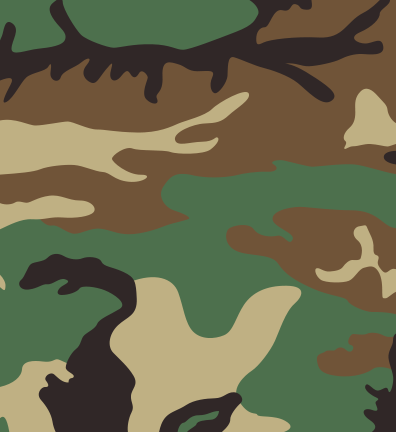
That this particular camouflage pattern has become the ordinary image of camouflage stems from ERDL having been the first camouflage to have been mass produced as a regular army uniform. Specifically, due to the exigencies of the Vietnam war, where dense foliage and close-quarters infantry combat made concealment a pressing issue, the American military shifted from uniformly olive-drab garments to those printed with ERDL. In 1981, Woodland M81, a scaled-up and more irregularly shaped iteration of ERDL, became the U.S. Army’s official Battle Dress Uniform (Turner 2010).
If the U.S. Army’s mass production and issuing of camouflage uniforms brought these pattern to the nation’s attention, it was their spread into increasingly popular fashions that caused them to become disembedded as a particular form rather than as a mode of interacting with an environment and sensorium. During the 1960s, when wearing any aspect of a military uniform was still classified as a felony, donning military fatigues was a gesture of defiance and a symbol of the anti-war movement, though these fatigues were still more often than not of the solid olive-green variety. Then, in the 1970s, wearing camouflage was taken up as an article of punk-rock fashion. Over the course of the 1980s, however, camouflage fashions became an increasingly popular phenomenon, as evidenced by Andy Warhol’s late work, his “camouflage” self portraits (Dillon 2011). By the 1990s every conceivable commodity would be offered in camouflage patterns.
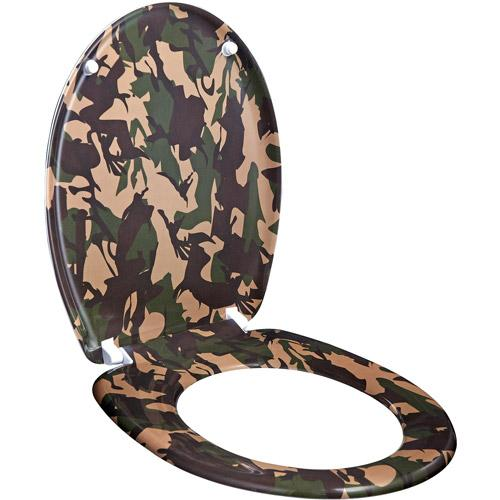
That a functional, military aesthetic proved so wildly successful as a colorway for mass-produced commodities is hardly surprising: certain trappings of feudal warriors - a passion for horsemanship for instance - would last well into the bourgeois era as markers of status. Moreover, even early, first world war experiments in proto-camouflage, then called “Dazzle,” had their day in the fashionista sun. Dazzle painting, nominally developed by Norman Wilkinson, a landscape painter, consisted of brilliant patterns meant to distort the three-dimensional image of ships; not to impede their detection and recognition as such, but to make it difficult to distinguish fore from aft, so as to make them difficult to target.
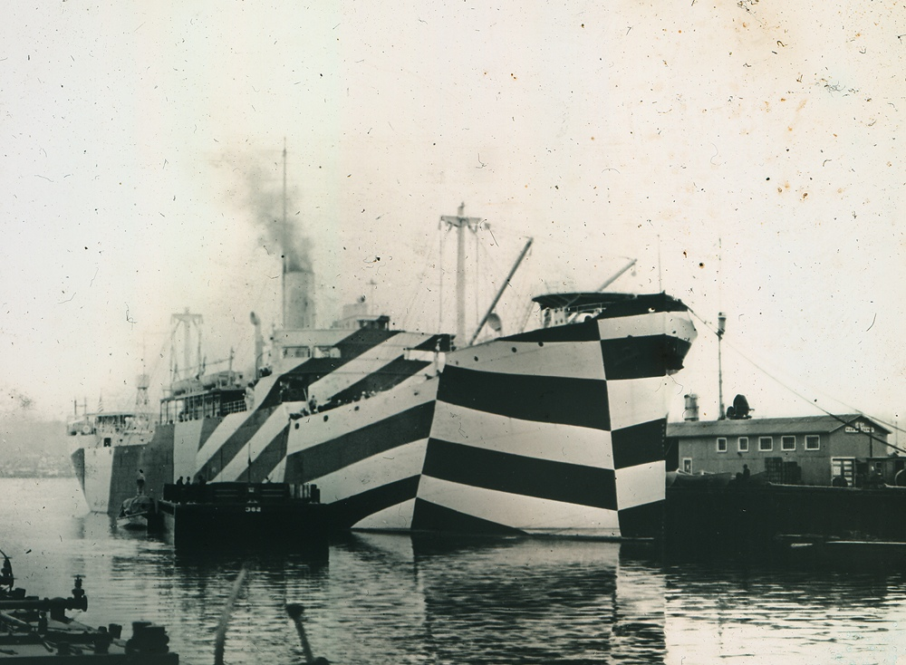
Though Wilkinson was awarded a patent for Dazzle painting, the technique was anticipated by and contemporaneous with Cubist and Vorticist methods for breaking up three dimensional objects. Indeed, many of the proponents and practitioners of these movements were employed in designing and painting disruptive patterns during the war. The French camoufleurs, the first official military division devoted to the development and application of camouflage, employed many such avant garde painters. Indeed, Pablo Picasso was so excited by his first encounter with a camouflaged tank that he famously declared “it is we who made this.” Much as the Vietnam War precipitated the spread of camouflage prints into popular fashion, after the First World War, “Dazzle Balls” would be held in Chelsea, complete with festive “bomb balloons” dropping onto a dance floor marked by Dazzle-themed decor and costumes.
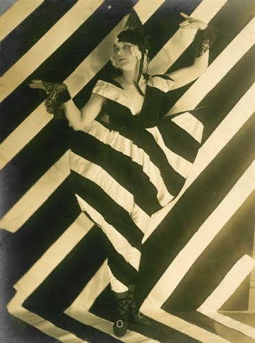
In economic historian Karl Polyani’s terms, that the ordinary image of camouflage has an approximate but particular form, something resembling the Woodland M81 pattern, irrespective of how, where, when, and why it is deployed, is a distortion arising out of the commodity’s propensity to disembed forms from the context of its production. But even if the ordinary image of camouflage is inordinately distorted, this does not mean that we can learn nothing from its form. As Austin writes regarding his work with ordinary language, “when we examine what we should say when, what words we should use in what situations, we are looking again not merely at words (or 'meanings', whatever they may be) but also at the realities we use the words to talk about: we are using a sharpened awareness of words to sharpen our perception of, though not as the final arbiter of, the phenomena (Austin 1956: 6).” The process by which one sequesters a word from language is precisely analogous to the methods by which Abbott Thayer, widely considered the first thinker of camouflage, demonstrated the relation between a camouflaged being and the image or world in which it is camouflaged.
Thayer used stencils to demonstrate his principle of disruptive coloration as it already existed in the natural world and to explore its capacity to hide things. This principle of disruptive coloration is eminently explicable via our ordinary image of camouflage: the irregularly bounded blocks of color break up the outline of the body or mass over which they are draped, impeding recognition of that body or mass as such. Thayer, of course, did not have access to such an ordinary image in which the principles of camouflage had already been applied and condensed so that they are ready, like a sort of black box, to be unpacked. Instead he had to resort to stencils as a mechanical means of making camouflage visible. These stencils allowed Thayer to demonstrate camouflage as it existed in the wild and as a potential and capacity for hiding bodies and masses. Thayer would provide a stencil where the outline of an animal was cut out along with a separate photographic or painted image in which a creature was camouflaged. By moving this stencil over an image in which a creature was camouflaged one would discover the creature by accident, whereas it was more near impossible to perceive it when its outline been broken up and thereby merged into its environment. Similarly, stencils in the shape of particular creatures - be they birds, insects, or human beings - allowed one to look out into the world or at images and imagine what patterns had the capacity to camouflage.
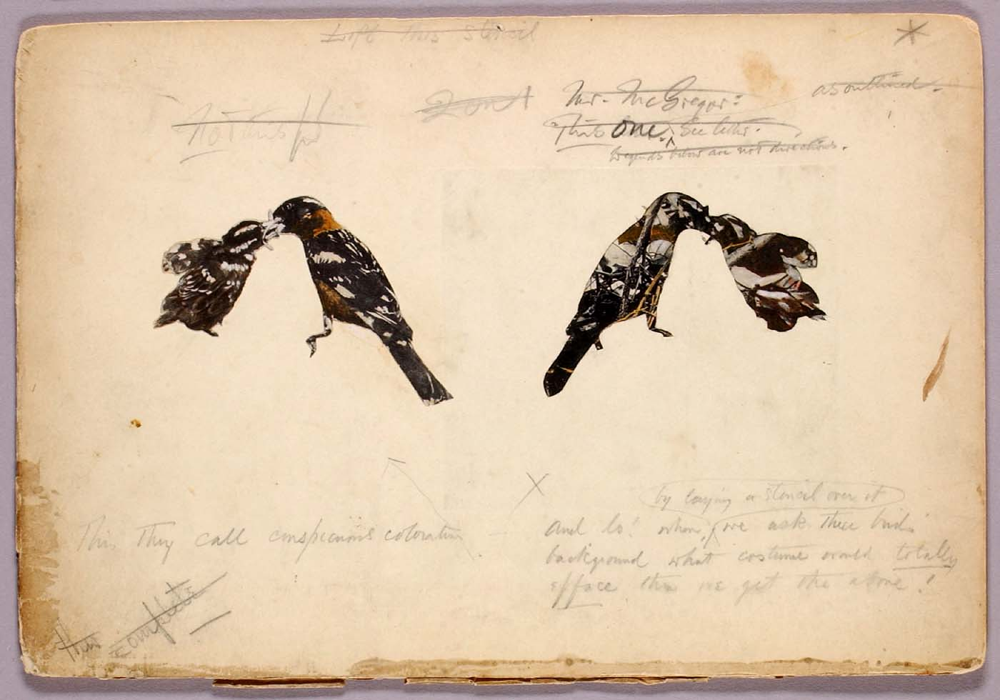
Austin takes particular locutions and looks for the ways of the world that inhere in their ordinary usage. He is not a naive realist, believing that the words have a denominative meaning or are fully apprehended in a priori fashion. Quite the opposite, language appears as something outside the speaker, a sort of prosthetic that operates “under the hood,” independent of the speaker whose mind might very well be elsewhere. Thayer’s stencils are the imagistic counterpart to Austin’s method. By isolating the animals hidden in photographs, Thayer’s stencils showed a relation between these animals and their environment. Excuses, performatives, and the other locutions that Austin explores are the camouflaged things and, and the unreflective stream of ordinary jibber jabber are the place in which they are camouflaged.
Looking into the ordinary image of camouflage provides us with a starting point, a point of traction, a “good site for fieldwork in Philosophy,” as Austin might have it (Austin 1956: 6). The limits of this approach are rather clear, however: when worn on the streets of New York City, for example, a Woodland pattern does not camouflage in the verbal sense. Indeed, despite the Woodland and ERDL patterns’ special place in bringing our ordinary image of camouflage into being, they were never particularly successful as camouflage in the field. U.S. and South Vietnamese special forces, as well as the indigenous peoples they trained and organized on the Laotian-Vietnamese border, found it ineffective and preferred the more exotic (at least to the ordinary seer) Tigerstripe and Lizard patterns that had been developed by French colonialists during their own Indochinese war. So what is camouflage, really?
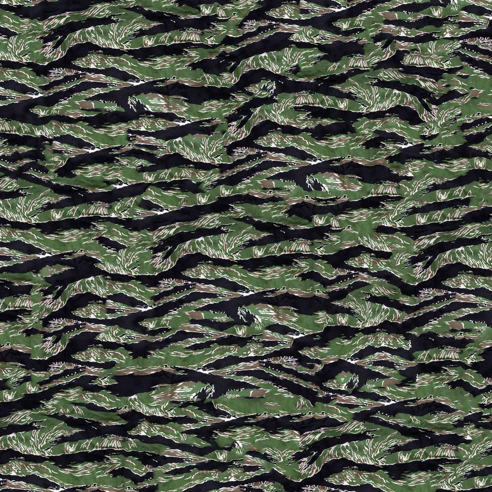
What is Camouflage?
Abbott Thayer proposed two concepts that have come to be understood as the undergirding principles of camouflage. First, disruptive patterning, as we have observed, breaks up the outline of the camouflaged body. Second, what Thayer called “obliterative countershading” renders a three-dimensional body two-dimensional, impeding perception and recognition of the three-dimensional body as such. This is achieved by countering the shadows that make a body appear three-dimensional by negating the effect of sun or moonlight with dark colors on exposed surface and bright colors on shadowed surface.
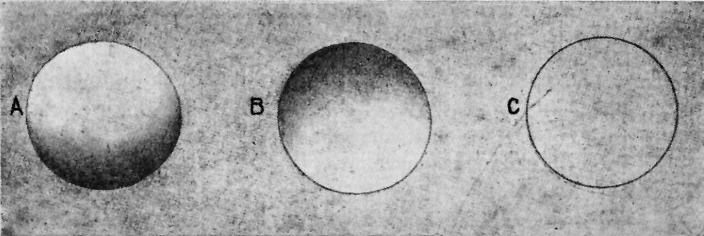
Abbott Thayer developed his principles of camouflage through his paintings of wildlife scenes. Painting uses shading to turn figures on a two-dimensional surface into three-dimensional objects, and Thayer was struck by the difficulty in accurately rendering the plumage or pelts of particular birds and animals while successfully giving them this illusionistic, painterly depth. In his book, Concealing-Color in the Animal Kingdom, Thayer sought to depict the difficulty of depicting such wildlife.
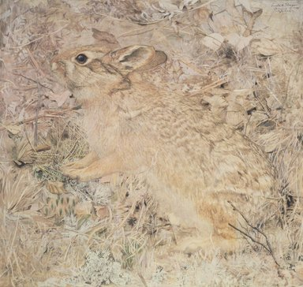
You can observe the same counter-shaded pattern in your neighborhood tabby cat: its more darkly-shaded back fades into a more brightly shaded belly, making it more difficult to discern it as an outline of a three-dimensional creature. But Thayer was not content to gesture to his reader’s own perceptions, or to turn to the photograph evidence. He supervised numerous illustrations of animals, many by his wife and son, which were not so much of the animals but of how the animals would be depicted if the artist did not compensate for their camouflage. These were paintings of animals as if they had been photographed accidentally and were still hiding in the image. There is something complexly tautological here, a camouflage madness.
While Thayer’s concept of camouflage was, upon its publication, widely heralded as a likely and testable hypothesis regarding the coloration of some animals, he unendingly posited camouflage as a universal principle of animal and insect coloration, often taking this fanatical universalism to unusual lengths. Thayer was staunchly opposed to the evolutionary biology of mimicry, for example, where certain animals come to mimic the appearance of other, poisonous or otherwise dangerous animals so as to confuse their predators. Thayer is recorded as having gone so far as to feed upon captured butterflies that were thought to be unpalatable to predators, as related by his daughter, Gladys:
My father’s special mission was tasting butterflies! This was in order to disprove what his very dear friend, Professor Poulton of Oxford has written many books to prove, the theory of mimicry, trying show that harmless butterflies or other insects had, through natural selection acquired similar patterning and coloring to those bad tasting butterflies for their protection. He actually tasted them and could find no difference in their flavor (Thayer in Forbes 2009: 78).
Similarly eccentric was his insistence that even creatures as brightly colored as flamingoes and male peacocks were camouflaged, writing that “these traditionally ‘showy’ birds are, at their most critical moments, perfectly ‘obliterated’ by their coloration.” (Thayer in Forbes 2009: 76) In the case of flamingoes, for example, he argued that they were countershaded in fiery colors so as to obliterate their outline when viewed against skies illuminated by dawn or dusk.
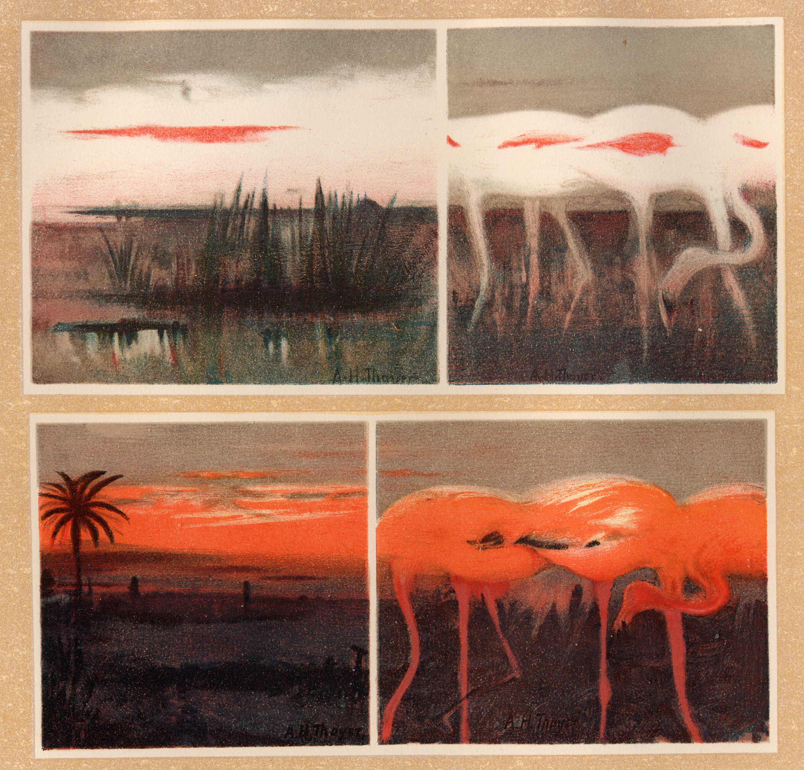
Thayer was accordingly met with much hostility both as a biological and military advisor; his unbending fanaticism regarding the universality of camouflage was his undoing. This insistence of camouflage’s universality has often been attributed to an “artistic sensibility” that could not grasp the protocols of neither scientific nor military discipline, but we are not in a position to deny or confirm these judgements on Thayer’s character. Rather than falling back on well-worn tropes regarding the ostensibly natural dispositions of artists, scientists, and servicemen, we might put some psychologisms aside and draw out a thread that runs through all of Thayer’s excesses. Thayer assumes a singularly anthropocentric and visual mode of perception. When Thayer ate poisonous butterflies and found them palatable, he was assuming that his taste held true for all animals. We might see this sort of solipsism of the senses as an effect of the concept of camouflage treated as an unmediated relation between pattern and world.
When we look at Thayer’s excess in advocating for military applications of camouflage we find this same unmediated pattern. With respect to naval camouflage, for example, he was absolutely persuaded that ships should be painted entirely in subtly countershaded and disruptive tones of white on white. He produced floods of letters and articles, and even entertained heated epistolary exchanges with Theodore Roosevelt. Powerfully inspired by the ill-fated Titanic, the father of camouflage could never be shaken of his conviction that, except during the full moon, a fleet painted entirely white would be “invisible as an iceberg.” This in spite of the many responses he received from the American and British naval offices, pointing out that camouflage would have to contend with “a position at least 100 feet above the deck and by an officer equipped with the most powerful glasses,” as Arthur Balfour of the British Admiralty put it in a personal response (Forbes 2009: 90). Just as Thayer presumed a human view with respect to the animal kingdom, in spite of the fact that predators and prey often rely on senses that are under- or over-developed with respect to humans, or that humans lack entirely, he presumed his own biologically human view with respect to practices of warfare, neglecting that these practices were becoming increasingly reliant on machinic optics.
Thayer’s solipsism of the senses was untamable, but the exigencies of world war sharpened the application of his concepts of disruption and countershading and forced them into a triadic relation with the enemy’s recognisance technologies. The wars gave rise to true camouflage, that which obliterates objects from mnemonic, photographic, filmic, live, streaming and otherwise machinic archives. Compare, for example, painter Peter Scott’s camouflaged patterns for England’s Western Approaches fleet to the primitive zebra patterns of the first world war, when ships were dressed like Cubist dandies.
Peter Scott, the son of the famous Arctic explorer, Captain Robert Scott, was a disciple of Thayer’s from a young age. In a letter written in 1950, he wrote of this lifelong engagement with Thayer’s principles:
As a boy of twelve I spent a great deal of time studying Thayer’s great illustrated book on camouflage and was much influenced by it. Later on I became a keen duck hunter and used a duck punt that was camouflaged in accordance with Thayer’ principles of negative shading. Later yet, when serving in a destroyer in the North Atlantic I was confident that these same principles applied in the tactics of night attack on convoys be German U Boats and that the escort vessels could make themselves much less visible by the use of pale colors and negative shading (Scott in Forbes 2009: 170)
In Scott’s camouflage patterns, such as the one pictured above, we can clearly see Thayer’s theories in action, but tempered by an experienced seaman. The funnels (smokestacks) are geometrically countershaded, as are the guns. The pattern is disruptive, and the large central blob sweeps across the three dimensional surface of the ship as if it were a two dimensional surface.
We can recognize the HMS Belfast ship as truly camouflaged for two reasons. First, it resembles our ordinary image of camouflage which, though a disembedded after-image, is still only beginning to become deformed: it has, in other words, the intertwined blobs of drab color we associate with camouflage. Second, it is effectively obliterative. With the advent of the second world war, Thayer’s principles had finally begun to win over the war offices of various nations. In Britain and America, this was largely thanks to Hugh Cott, who had to contend with an entrenched establishment of effective camoufleurs who still clung to amateurish notions of misdirection, among them the aristocratic Englishman, Norman Wilkinson of dazzle fame, who during the first world war had won out over the eccentric and somewhat “backwoods” American Thayer.
Cott was devoted a student of John Kerr, who had published a book, Adaptive Coloration in Animals that expanded and supplemented Thayer’s principles. Kerr was also Thayer’s friend and closest ally regarding the application of principles of disruption and countershading to warfare. During the second world war, Cott became one of the British War Office’s foremost camoufleurs, helping orchestrate large scale operations in the North African campaign against the Erwin Rommel and the invasion of Normandy as well as teaching at Farnham Castle, the Royal Engineers’ Camouflage Development and Training Center. To achieve this position and overcome the intransigence of Wilkinson et al, he published a maddening number of articles militating for Thayer’s principles of camouflage, including a number of articles and ripostes to various critiques in Nature. The turning point, however, was when he was finally was comissioned to camouflage two rail-mounted howitzers that were due to be shipped to the English coast. He camouflaged one with then-conventional techniques and the other employing Thayer’s principles, and then had both guns photographed by aircraft from myriad angles. The camouflage establishment was thoroughly humiliated by the results, and with some hemming hawing Cott and, retroactively, the long dead Thayer were given their due.
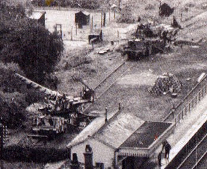
As we can begin to understand via the aerial perspective from which Cott’s demonstrative photographs are shot, however, the appearance of real camouflage during the world wars was a function of the application of Thayer’s concepts of disruption/countershading, but also a continuous, violent imposition of an enemy-gaze: Thayer, with his solipsism of the senses, could have never imaged accounting for aircraft-mounted cameras.
Non-sensing
Camouflage is not any particular pattern, as we commonly imply when we wear “camo” on the street. It is also more than a relation between pattern and world, as Thayer’s study would have it. Rather, it is a threefold relation between pattern, world, and sensorium, all of three of which are always in flux. Whereas Thayer’s principles of countershading and disruption are observable in all real camouflage, his solipsism of the senses was quickly corrected by the exigencies of the wars. Specifically, the development of technologies to sense things at a distance, which tracked and continue to track the development of technologies of death and destruction at a distance, forced the practicing camoufleur to disrupt and countershade with reference to such technologies, rather than only with reference to a sort of phenomenologically intuited, embodied gaze.
We can observe this appearance of what is both a vernacular expression and advancement of Thayer’s principles in the coevolution of aerial recognisance and camouflage netting. The sensorium that the camoufleur had to contend with in this case was machinic and mathematical rather than that of the human eye. This is not simply because the aerial perspective is “unnatural.” By the interwar period, aerial recognisance cameras were already using infrared filters; indeed, the German SS’s “Leibermuster” camouflaged uniforms were already incorporating light-absorbing dyes to foil early infrared night-vision goggles (Turner 2010).
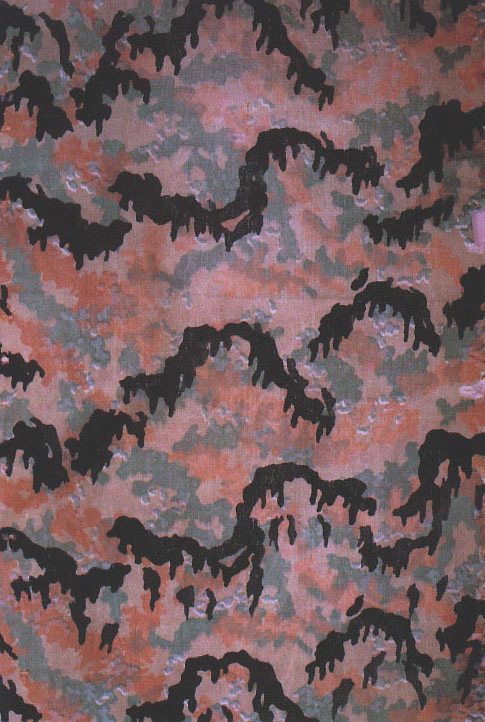
Moreover, reconnaissance photos were taken from both overhead and oblique angles so that photogrammetric algorithms could be applied to give series of photographs a uniform scale. These scale-adjusted overhead photo-maps were then compiled into recognisance atlases which presented the reassembled terrain serially, over time, so that any suspicious changes or lapses in camouflage could be detected. At the end of this mathematical and mechanical processing, the human eye which looked down on the reconnaissance atlas was expertly trained in the science of identifying objects from aerial perspectives and identifying the tell tale signs of camouflage.
Camouflage netting is a good example of a vernacular but modern mode of camouflage. Because netting disrupts a solid object’s shadow and makes objects and shadows difficult to distinguish from one another, the production of camouflage netting increased rapidly in scale and complexity over the course of the first world war. As Hanna Rose Shell puts it in her book, Hide and Seek, it was “not quite invented, netting evolved, one might say, an adaptive and multipronged response to the new conditions of photographic warfare.” (Shell 2012: 106-107). Recovering and attempting to reverse-engineer German reconnaissance cameras from downed aircraft was a large priority for counter-intelligence officials, and the camoufleurs were always photographing their own camouflage from on high in an effort to simulate what the enemy could or couldn’t perceive (Shell 2012: 109).
As the enemy’s archive of reconnaissance atlases deepened, camouflage became more than a technique for hiding things synchronically, but what Shell calls a “camouflage consciousness.” Lapses in the seamlessness of camouflage were worse than no camouflage, marking things as valuable targets. Camouflage proliferated, becoming at once more and less centralized. Militaries had to coordinate the camouflaging of large swaths and “keep the nets mended,” to use Shell’s turn of phrase. At the same time, propaganda to the civilian populace promoted camouflage consciousness, encouraging civilians to produce a decentralized network of camouflage.
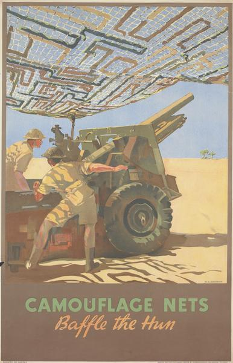
Deleuze and Guattari write that camouflaged beings are “crisscrossed by abstract lines that resemble nothing, that do not even follow organic divisions; but thus disorganized, disarticulated, world with lines of rock, sand, and plants, becoming imperceptible.” Camouflage, for Deleuze and Guattari, is a particular kind of becoming, a “becoming-everything that makes the earth itself a becoming.” (Deleuze and Guattari 1987: 280) Ion Idriess, in a manual on sniping written for the army during the second world war:
Use the country; become part of the earth upon which you walk or lie or hide; make yourself invisible with leaves, or earth stains, or with lightly teased strips of bark, with broad leaves of the jungle or the grass of the forest, with the rushes of the stream or the spinifex of the desert, with the wheat of the field or the seaweed of the seashore… with charcole of night or the ochres of coloured lands, with the bracket of the creek or with tea tree bark to make you grey as the granite rocks. Use your wits and eyes to make you one with the very earth upon which you walk or hide (Idriess in Shell 2009: 163)
This becoming-everything is a madness, the same madness afflicted Thayer, for whom all beings were becoming camouflage. Consider the oddly named Solomon Solomon, foremost expert on the use of camouflage netting during the first world war. He became convinced that the Germans had developed a mode of camouflaging entire, moving armies under vast, seamless arrays of camouflage netting. He developed an unshakable fascination with his own military’s reconnaissance atlases and could see nothing but mile after mile of camouflage: the Germans, here, had become “one with the earth” (Forbes 2009: 109).
Reconnaissance atlases prefigure the advent of video reconnaissance and today, the mechanisation of reconnaissance continues apace. Just as automatic, mounted cameras replaced pilot-operated camera-guns during the first world war, today the unmanned drone has done away with the pilot entirely.
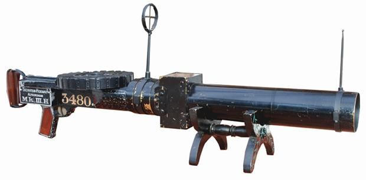
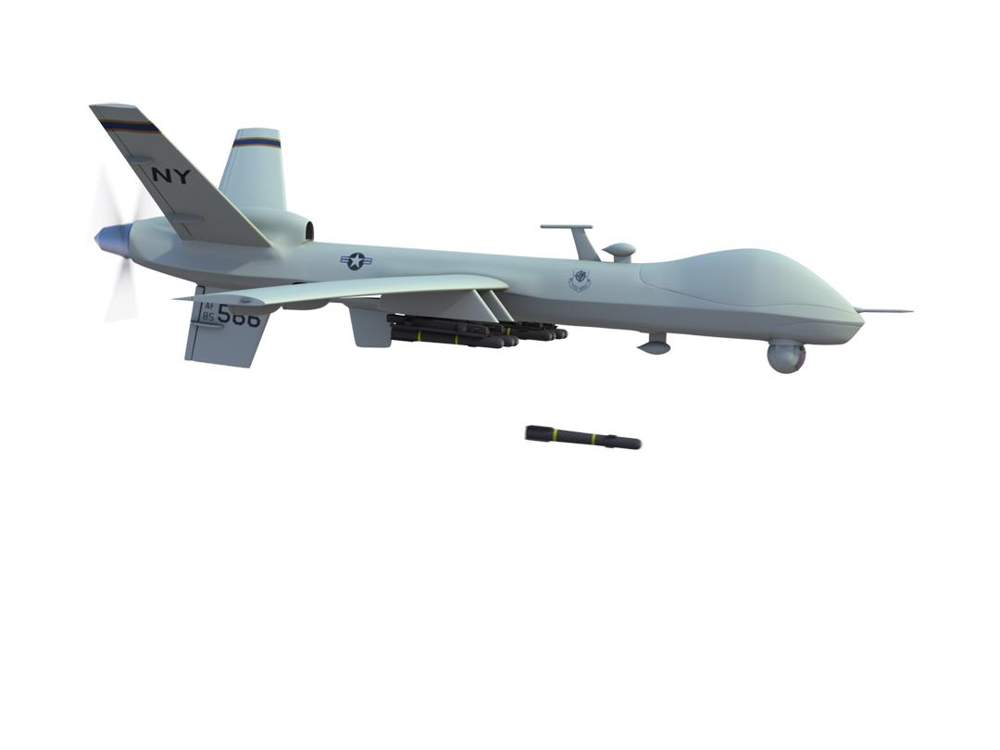
These drones, which can stay aloft many times longer than conventional aircraft, provide continuous video footage of target areas. As Harun Farocki puts it in Images of the World and the Inscription of War, “the preserving photograph, the destroying bomb – these two now press together.”
The identification of targets, once the human, if highly disciplined, end of aerial reconnaissance, is becoming increasingly automated via facial recognition software, which can be used to mine large amounts of video data. Indeed, this capability has increased so exponentially that, with the advent of the diffuse and deterritorialized “war on terror,” reconnaissance and surveillance become increasingly synonymous. As Virilio tells us in War and Cinema, “the camera-recording of the First World War already prefigured the statistical memory of computers.” (Virilio 1989: 71) Camouflage, however, is already evolving counter-patterns to these new predatory sensoria. Activist and designer Adam Harvey, for example, has put together a group of stylists and makeup artists to create styles which foil face recognition software. Both anticipating the algorithms used by these programs and testing their designs against these programs abilities, much as world war camoufleurs photographed their own attempts at camouflage, the group has created created a dozen or so styles that foil the most popular facial recognition algorithms (Harvey 2010).
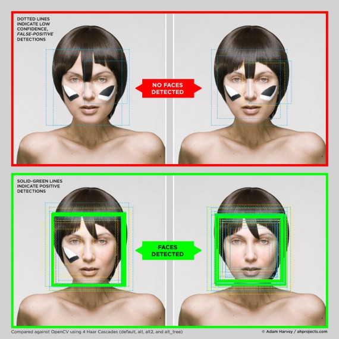
For Virilio, however, from second world war onward we are across a technological threshold, so that “visibility and invisibility have evolved together, eventually producing invisible weapons that make things visible – radar, sonar, and high-definition camera of spy satellites.” Accordingly, he tells us that “the problem is no longer one of masks and screens; of camouflage inhibiting long distance targeting.” (Virilio 1989: 71) Insofar as camouflage was already in relation to the opponent’s machinic sensorium, it is difficult to see how the relation between the quite concrete and tangible radar array, for example, and the invisible radio waves it emits and receives is quite so far from the aeroplane-mounted camera and the “invisible” waves of light that it gathers. We might be thus inclined to lean towards Lev Manovich’s longer historical arc of an increasingly automated “visual nominalism,” where he invokes Lacan’s contention that “what is at issue in geometric perspective is simply the mapping of space, not sight… vision in so far as it is situated in a space that is not in its essence visual.” For Manovich, radar is the apex of an ongoing “automation of visual nominalism” that reaches back to perspectival techniques developed during the Renaissance.
All it sees and all it shows are the positions of objects, 3-D coordinates of points of space, points which correspond to submarines, aircrafts, birds, or missiles. Color, texture, even shape are disregarded… a radar operator sees a screen, a dark field with a few bright spots… but it performs [its delimited function] more efficiently than any previous perspectival technique of technology. (Manovich in Uroskie 2006: 314)
Radar, which stands for Radio Detection and Ranging, works by bouncing radio waves, a form of electromagnetic radiation, off of objects and then capturing them using a radar dish. An algorithm uses the lag between the outgoing and incoming waves to calculate the location of objects suffused by the field of radiation. Since the mid 1980s, however, the U.S. Air Force and Navy has deployed aircraft and, increasingly ships whose unique shapes break up these electromagnetic waves using our now familiar principles of countershading and disruption, but as applied to an entirely non-visual, even non-optical dimension. Specifically, the military has created vehicles whose shape deflects the radio waves so that they do not linearly return to the radar installation. Just as a the mottled colors in an ordinary camouflage pattern interact with a forest’s mottled light so that the light reflected back to the eye arrives in fragmented form, impeding detection and recognition, the radar waves return to the dish in fragmentary fashion, so that the stealth vehicle does not appear as a three-dimensional, solid object.
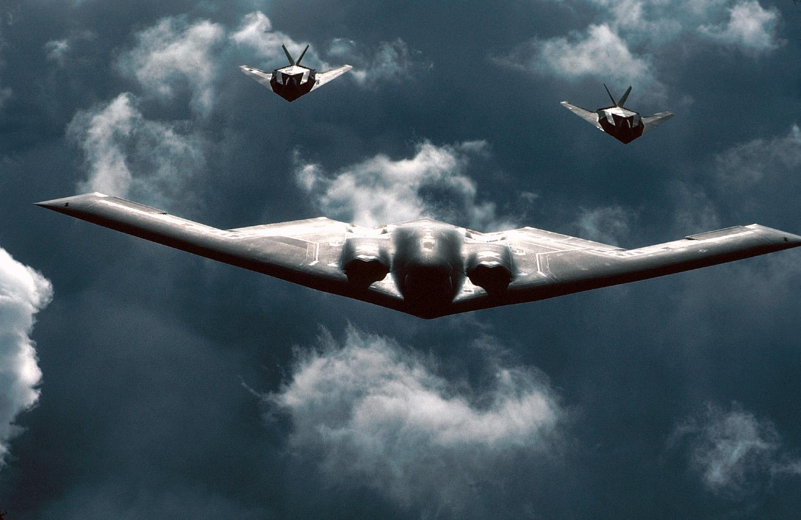
Stealth technology is a truly exemplary form of camouflage because the sensorium that drives its forms is completely remote from creaturely faculties. We are not dealing with spectrums of light that simply go beyond what the human eye can detect, as in the case of ultraviolet, infrared, and ambient starlight, which are detectable by certain insects and nocturnal animals, as well as by night vision goggles. We are not even dealing with organs that human beings are missing, but which appear in porpoises and whales allowing them to echolocate, for example, or those that certain species of eels, fish and sharks use to electrolocate their predators or prey. Rather, the uniquely non-biological nature of radar reaches back the fundamental physics of life itself. Radio waves have too long a wavelength and are too energy-poor to move electrons from one energy state to another. Astrophysicist Carl Sagan, for example, has observed that all the radio telescopes in the world have still detected less energy than that released by a single snowflake hitting the earth (Sagan in O’Brien 2012). This means that radar, as a biological sensorium, was precluded before life had even become multicellular and diversified into creatures that use radiation as sensation (animals) or growth (plants).
We do not linger on the primordially non-biological nature of radar and stealth-camouflage to claim them as exceptions or climaxes. Indeed, other relations between camouflage and sensorium obtain which do not have any biological counterpart. For instance might point to the relation between thermal imaging, where differences in heat are rendered topographically, and nascent forms of thermal camouflage, where the thermal-outline of an object is broken up by a number of hexagonal plates on its surface that can be rapidly cooled and heated, as in BAE’s “Adaptiv” system: a sort of synesthetic camouflage, where the tactile sense of warmth becomes and undoes an ocular sense of color. Rather, I invoke stealth technology to demonstrate the profound heterogeneity of the domains where camouflage is deployed. In lingering on the question of camouflage and radar, I am setting the stage for a consideration of political applications of camouflage.
Political Camouflage
Colloquially and in the popular press, the phrase “political camouflage” is interchangeable with the concept of disguise. To give an example more or less randomly drawn from current events, in a recent editorial from Al Jazeera, journalist Zahir Janmohamed refers to Hindu Nationalist and Indian presidential hopeful Narendra Modi’s celebration of Ahmedabad, a city in western India, and its richly syncretic history, despite his alleged role in communal massacres of Muslims 11 years earlier. The implication in this article is that Modi is a Hindu chauvinist masquerading as a liberal multiculturalist. Whether or not the allegation is sound, the tactic employed by Modi in this case is not that of the camoufleur. He may be mimicking the cosmopolitan behavior of an acceptably centrist politician, but he does not seek break up the outline of his movement, so that it appears as an arbitrary fragment of the political field, a disunity without depth.
A stricter application of camouflage to a political field yields a real philosophy of praxis. The term “philosophy of praxis” is drawn from Antonio Gramsci’s Prison Notebooks, and it is his political project that will serve as the central example of camouflage as a political concept. But I am not deploying Gramsci as some singular progenitor of camouflage politics. Indeed, Gramsci eschewed all heroic authorship with respect to his philosophy of praxis. For Gramsci, the philosophy of praxis was a way of making explicit the way in which a heterogeneous and fragmented field could generate a direction, a movement. A philosophy of praxis, he argued, inhered in the dispositions and tactics inculcated into currently hegemonic class formations. Though a philosophy of praxis, like camouflage, can be deployed by either or any side, making its workings explicit favours class formations who are not inculcated into intuitively wielding such a philosophy. Gramsci articulated this objective predominantly through a discussion of Machiavelli, who Gramsci considered a pre-Modern philosophy of praxis (though this was itself part of a wider game of camouflage, as we shall see). He writes that “anyone born into the traditional governing stratum acquires almost automatically the characteristics of the political realist, as a result of the entire educational complex which he absorbs from his family milieu, in which dynastic and patrimonial interests predominate.” To this he added that the “common assertion that Machiavelli’s standards are practiced but not admitted” thus does not mean that “Machiavelli himself was a poor machiavellian, as is commonly asserted” but that “Machiavelli had in mind ‘those who are not in the know,’ and it was thus they who he intended to educate politically (Gramsci 1971: 135).”
The concept of the philosophy of praxis as a politics of camouflage is complicated and deepened by the context in which it was formulated. Namely, the Prison Notebooks were written from prison and thus had to elude Mussolini’s censors. Moreover, because Gramsci died before the regime collapsed and he could be released, he was never given the opportunity to piece together the notebooks’ fragments and clarify his terms. Thus, when his oeuvre was taken up as a sort of Holy Book by Palmiro Togliatti and the Italian Communist Party (PCI) after the war, that “philosophy of praxis” was to be unilaterally translated as “Marxism” became party orthodoxy. As W.F. Haug tells us in his article Camouflage or Refoundation of Marxist Thought?, the editor of these Togliatti-sponsored editions, Felice Platone, even went to far as to textually substitute “historical materialism” or “Marxism” for “philosophy of practice.”
By the 1970s, when the party’s hold on the Italian left had been broken by a proliferation of more free-flying groups – operaismo (workerism), the Autonomists, a resurgent anarchism – a counter-interpretation began to form. Here, Gramsci’s philosophy of praxis was not or at least not only camouflaged from the optic of fascist censorship, but camouflaged from Marxist orthodoxy, that of the party or perhaps even Gramsci’s own. In 1970, for example, Christian Riechers could already write that “philosophy of praxis is not merely contingently conditioned, i.e. as a metaphorical camouflage for ‘Marxism.’ (Riechers in Haug 2000: 10). This position has also been adopted sociologically minded scholars who find the Prison Notebooks’ diversity of social appellations such as “historical bloc,” “intellectual strata,” and so on, more utile than a flattening translation of these terms into rigidly Marxist classes.
The battle lines were drawn, and the question of whether Gramsci’s Prison Notebooks were camouflaged against the Fascist or orthodox Marxist optic continues to wrack Gramsci scholarship to this day. I do not have time, resources, or inclination to come down on either side of this debate. Rather, let us observe that the intractable polysemy of the Prison Notebooks is precisely that of a successfully camouflaged being. Gramsci lived through the rise of Italian Fascism a movement that began as the very shadow of Leftism, an offshoot of the Italian Socialist Party and anarcho-syndicalist traditions. As Haug puts it, the "philosophy of praxis" represents in its contemporary intellectual situation the attempt to rectify a fault which was fateful for the history of ideology in the 20th century, and which consists in the migration and mutation to the right, indeed to Fascism, of elements and motifs of Marxist thinking on praxis (2000: 16).” The Prison Notebooks are not only camouflaged against fascist censors or Marxist dogmatism. They are camouflaged against any sensorium that captures by grasping, and theirs is a camouflage so seamless that its efficacy remains undiminished. Gramsci does not seek to “lock down” his philosophy of practice as belonging to the Left by using terms, whose fixity always illusory. Rather, the outlines are disrupted by inflows and outflows of anachronism - Machiavelli becomes Marx becomes Gramsci and vice versa - and it is countershaded, so that it can appear as a two-dimensional ideology or sociology, while the three-dimensional movement works through the background.
The camouflage in which the Prison Notebooks are written recur in the political maneuvers they describe and advocate. For Gramsci, an effectively counter-hegemonic formation cannot be uniform, but must act as interlocking but heterogeneous parts that move together in a particular direction. Gramsci wrote of this through the lens of military strategy and tactics, writing at length about how the diversity of types of military formations affords adaptability, versatility, and resilience. He was particularly interested in the relation of special forces volunteers (the arditi) and conscripted regular army, not only as formations that were variously trained and equipped, but as different affective and ideological blocs. Just as the heterogeneity undergirded effective military action, it was the heterogeneity of various social formations and their intellectuals that undergirded a politically effective intellectual stratum: just as he was “...against ‘vanguards’ without an army behind them, against commandos without infantry and artillery, but not against the vanguards and commandos as they are functions of a complex organism,” he was “similarly, against intellectuals removed from the masses, but not against the intellectuals of a mass.” (Gramsci 2000: 382)
Gramsci’s media studies were equally aimed at linking disruptive heterogeneity to a hegemonic direction. Earlier in the notebooks, he concerns himself with an exhaustive taxonomy of his era’s periodicals, then moves on to popular literature, and in the last few notebooks concerns himself with journals and journalism. He does not privilege media that is particular didactic or explicitly political: indeed he values forms of “popular literature,” he takes all forms of culture seriously to almost preposterous lengths, such as where laments how underdeveloped the genre of pulpy detective novels were in Italy at the time (this situation has been quite thoroughly remedied). In all, his systematic, almost neurotic cataloguing of media display this same disruptive pattern as his reflections on intellectuals, politics, and war. Gramsci clearly does not believe that political action necessitates uniform vanguard or mass publications. Rather the efficacy of the media as ideological apparatus depends, again, on the disruptive heterogeneity: a multiplicity of publications, moving at different speeds and with different affective valences, acting as flanks or shock troops, carrying out pincer movements, and entrenching positions.
Especially in his media studies, Gramsci was both troubled and fascinated by the rise of fascism.
Belittling one’s enemy is in fact an effort to enable oneself to believe that he can be vanquished… If the enemy dominates you, how can he be inferior? (Gramsci 2007: 324)
Just as Fascism borrowed much of the Left’s language and imagery, Gramsci was in no way adverse to gleaning tactics from the enemy. Like the great camoufleurs, he had a great ability to anticipate and extrapolate from the enemy sensorium. There is no doubt that the Italian fascists were adept at producing and manipulating media. They were famous for “parallel organizations” each with their own media apparatuses, so that the party’s cudgels, its squadristi, were de-linked from the parliamentary party, who could pose as “handlers” while acting as the thugs’ intellectual wing. The fascists, moreover, spared no expense in developing media outlets targeting various sectors of the population. In his article “Mob Porn,” for example, Jeffery Schnapp examines the role of centerfold-esque images of crowds in the Rivista Illustrata, a sort of middlebrow, brightly colored, fascist equivalent to Life Magazine.
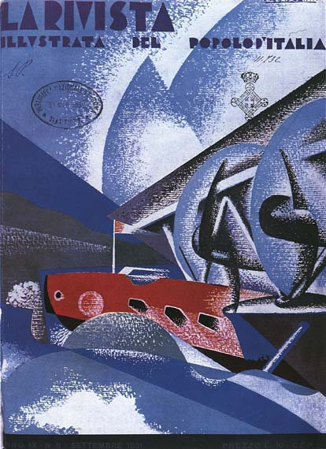
In parallel, we might note that RAI, the state telecommunications division that still runs half of Italy’s national television stations, began as the state radio service under Mussolini.
For Gramsci, politics is most akin to wars of decolonisation with their guerilla techniques and, we might add, their crucial deployment of camouflage.
Political struggle… can be compared to colonial wars or to old wars of conquest when, that is, the victorious army occupies or intends to occupy permanently all or part of the conquered territory. In that case, the defeated army is disarmed and dispersed, but the struggle continues in on the terrain of politics and of military “preparation.” Therefore, in these mixed forms of struggle, which have a fundamentally military character, but are above all political (every political struggle, however, has a military substratum), the use of arditi [special forces] requires the development of an original tactical concept for which the experience of war can provide only a stimulus, not the model (Gramsci 1992: 218-219).
Indeed, the idea of the fascism as an all conquering, all brainwashing state is inappropriate to Italy, where the fascists had seized power amidst a violent near civil war between Left and Right: a conflict that, unlike in Germany, the fascist state was never able to fully suppress: witness the “Five Days of Naples” uprising, militant strikes carried out in Milan and Turin, and the hundreds of thousands of Italians killed or wounded fighting as partisans against fascism (Mammarella 1966: 46-48, 79-83). Especially for the Left, the world wars were not discreet geopolitical events, but a stage in a continuous revolutionary struggle that could be traced through the Spanish Civil War, where Italian volunteers poured-in to fight along their counterparts on either side of the political spectrum, to the bitterly fought resistance to Mussolini’s Saló Republic in Nazi-occupied Northern Italy. The fascists had to take Italy street by street, in a guerilla campaign that was equally military and political. Gilles Deleuze and Félix Guattari put it well when they write, “the concept of the totalitarian State applies only at the macropolitical level… but fascism is inseparable from a proliferation of molecular focuses in interaction, which skip from point to point before beginning to resonate together… youth fascism and war veteran’s fascism, fascism of the Left and fascism of the Right, fascism of the couple, family, school, and office” (Deleuze and Guattari 1989: 214).
Occupation, civil war, guerrilla war, and modern politics: all four of these intertwined arenas of combat are effective domains of camouflage. The Vietnam War, as we have observed, necessitated a renaissance in the American military’s use of camouflaged uniforms. Similarly, the Italian fascists, faced with an interminable war against the Left, created the first-ever mass-produced camouflage uniforms in the telo mimetico pattern to be distributed to regular troops. This pattern also proved the world’s longest-running, having been decommisioned by the Italian military only in 1992.
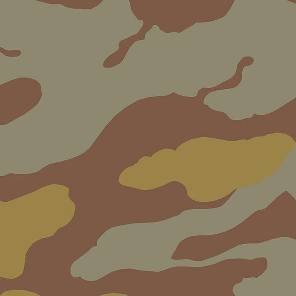
Gramsci’s heterogenous military formations, media-ideologies, and political wings, factions, and currents belong to movements that appear only as a fragmented fields, so that when they manifest as political events they seem, at least to the sensorium to which they are opposed, as spontaneous actions. There is a deep resonance with Jaques Ranciere’s notion of dissensus as the locus of the political. For Ranciere, the enemy sensorium is that of the police, “whose principle is the absence of void and supplement.” The police and the political are two incommensurable “distributions of the sensible,” what we have been calling a sensorium, and it is precisely the disruptive heterogeneity of the polity which breaks up its outlines, so that it “disappears continually.” Conversely, it is precisely this disappearance, this camouflage, which allows politics to remain in existence, to avoid being targeted for destruction:
A political demonstration is therefore always of the moment and its subjects are always precarious. A political difference is always on the shore of its own disappearance: the people are always close to sinking into the sea of the population or of the race; the proletariat are always on the verge of being confused with workers defending their interests; the space of a people’s public demonstration is always prone to being confused with the merchant’s agora and so on. (Ranciere 2010: 39)
Like the camouflaged being, the dissensual polity appears as a merely spatial or geographic formation, and appears as movement only at the moment of its irruption (33). The Gramscian, counter-hegemonic formation and Ranciere’s dissensual polity alike are camouflaged armies cross cut by variegated and multitudinous entities so that they appear as nothing more than empty space: subaltern, subterranean, earth-clad genealogies ready to rear up into history and strike like snakes appearing as dead leaves and grass.
Just to ground these linkages, we might look at the short lived Occupy movement, not as an example of a successfully counter-hegemonic formation, but as an example of the efficacity of the enemy sensorium’s seek and destroy capabilities. At the height of the movement, the mainstream media of all stripes howled about the movements “incoherence.” Insurrectionary anarchists were mixed in with hippie pacifists, activists from myriad identity-political formations, as well as the techno-triumphalist “organizers” who tended to credit twitter and whatnot for the movements short lived successes. These groups were bound only by “spontaneous” action and all linkages between distinct parts were plausibly deniable. The key to the movements initial success, in other words, was its dissensual, counter-hegemonic, camouflaged body: one limb could neither condemn nor condone the actions of another.
The local news in Oakland, California, where the movement actually managed a successful general strike that shut down the city’s busy port, was typical in its frequent reports that Occupy Oakland had been “occupied” by the black bloc (indeed we find similar reports as far afield as Tampa, Florida, where the embryonic movement was infinitesimally small). Similarly, The Economist described the demonstration as “the odd bit of violence, a lot of incoherent ranting and plenty of inconsistency." And again, in Portland, Oregon, the Occupy camp (the largest in the nation), and particularly its “ghetto” populated mostly by younger “street kids” with their pit bulls and punk rock sensibilities, was attacked as nothing more than a homeless encampment: the desires which brought its actors into the fold were apparently too multitudinous and material to count as political. Notably, none of these media outlets hold themselves to any such sort of coherence: they are a chaos of incommensurable logics spliced together, disrupting any outline by which a person or position could be targeted. Newscasts vacillate between the clashing soundbytes of talking heads and objectivizing voyeurism, cutting every few minutes to a rapid series of discordant ads; deodorant and tampon commercials with their logic of bodily shame followed by pleas from amnesty international consisting of montages of dying children calling for pity and humanitarian sensibility followed by a sexy dance of platters from the local diner meant to pique one’s appetite. The goal, which was not conscious but one which emerged out of the complexity of the Capitalist media, was to deny the incipient movement recourse to the very camouflage by which its own optic escapes targeting. And, indeed, it was precisely at the height of the movement, when professional media consultants were hired, anarchists purged, and rituals/branding such as the “human microphone” institutionalized that the movement became an ironic caricature, so that now those who fought hardest are the most embarrassed to utter the words “Occupy.”
Analogues
Having followed camouflage as it recurs laterally, up and down through disparate domains of sensation and politico-military action, we now turn to the concepts that it abuts, such as mimicry, disguise, and decoy. In exploring boundaries where camouflage alternatively cleaves itself from or bleeds into its cognates, we gain a more precise, geographic knowledge of camouflage as a dynamic; we trace what Deleuze Guattari call “the concept’s uneven contours.”
Mimicry
Mimicry involves a creature or object taking on the appearance of another creature or object. It is a sensory form of bluff, where a disempowered creature or thing fools an opponent into retreating by appearing as an empowered creature or thing. Michael Taussig, in Zoology, Magic, and Surrealism in the War on Terror, claims that camouflage involves “blending to the point of concealment, as with mimicry; the other is to dazzle, by which I mean to distort and to misdirect attention as with cubist-style painting” (Taussig 2007: 10). This definition is not entirely correct. While endearing to those with flashy sensibilities, the dazzle camouflage of the first world war largely failed in its efforts to misdirect torpedoes, and this goal is only loosely related to camouflage’s disruptive function. Moreover, his conflation of blending (a non-technical term) and mimicry occludes important differences between the two concepts. Mimicry turns the mimic into an ontologically similar and singular thing, whereas camouflage makes the camouflaged thing into a multiplicity that includes not only formless and heterogenous matter, but also absences, holes, and shadows.
Camouflage and mimicry most clearly contrast where aposematic coloration (warning colors) are mimicked. The scarlet king snake, for example, mimics the color scheme of the venomous coral snake. This coloration makes the king snake highly visible, yet because it appears as a venomous snake, predators are dissuaded or startled out of preying upon it. Similarly, the Elephant Hawk caterpillar has a posterior that resembles the head of a snake, and when it is in danger it raises this portion of itself in imitation of a snake raising up threateningly.
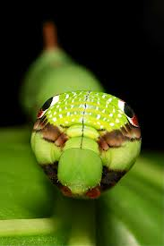
Just so, stop signs put up by business owners in private parking lots and communities also mimic warning colors. These stop signs, nearly identical to those put up by the state, mimic signs undergirded by juridical and police force without actually having recourse to such force: mimicry of warning colors is a social as well as a biological reality.
Mimicry and Camouflage begin to shade into one another, however, when mimicry is employed as a mode of concealing things, such as the myriad insects that perfectly imitate the shape and colors of particular kinds of twigs, leaves, or thorns. We might note, however, that in this realm the difference between mimicry and camouflage is a question of scale and movement. Camouflage employed by snipers and hunters, for example, incorporates mimicry. Because these forms of camouflage employed in this professions need only hide a person remaining still within a spatially and temporally constricted zone, they can incorporate mimicked beings from their environment. Hunter’s camouflage, for example, might incorporate images of branches and fall foliage that mimic a particular stand of trees during a particular season, or representations of dried reeds for a winter marshland. Similarly, the “ghillie suits” employed by snipers are decorated with particular kinds of local fauna such as masses of green moss or dried reeds.
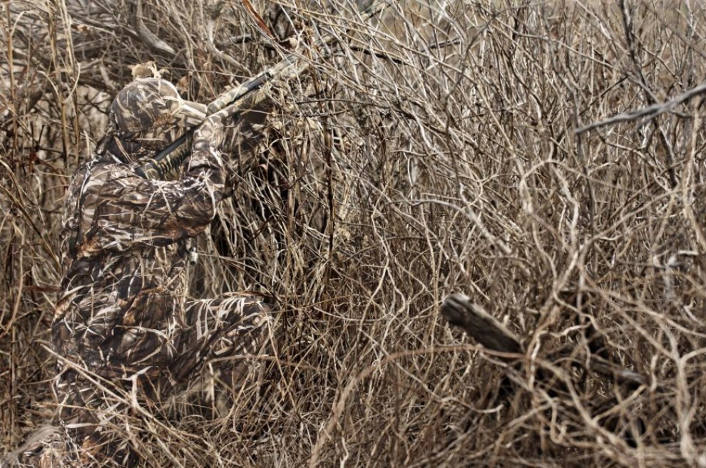
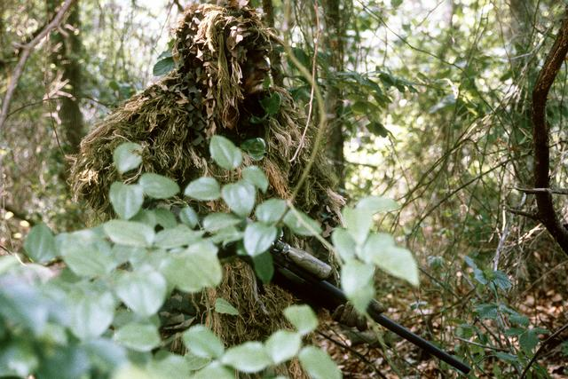
What makes Ghillie suits and hunter’s camouflage unsuitable for regular military operations is that they are too finely tuned to their particular environment. The nested, mimicked objects and images are recognizable as whole objects but dismissed when they are typical of a particular environment. When they are found in environments in which they are rarely found, however, these objects and images attract attention. Such mimicry-camouflage hybrids thus limit movement, or at least restrict it to particular niches that form an archipelago of concealing zones.
This problem of movement is really a question of scale. The question is: what are the relative sizes of the camouflaged thing and the world in which it is to be camouflaged. As the world in which one must be continuously hidden dilates, effective camouflage becomes more purely a question of disruption and countershading. As this world constricts, camouflage patterns become more contaminated by mimicked images and objects. The question comes to a head, for example, in highly specialized creatures for whom a single plant constitutes the world in which they must be camouflaged.
Disguise
A disguise, today, is considered a way of concealing one’s “true” identity, often with nefarious or at least mischievous intent. In Middle English up until the end of the mid-19th century, however, to disguise meant simply to change in style or appearance. The word was not antonymical to some authentic identity. Indeed its antinomy is preserved the conjunction of its prefix,“dis-,” and the word “guise,” which has preserved its meaning as appearance. This is telling insofar as, today, guise and disguise are synonyms, both counterposed to the concept of an inner, authentic, true identity.
Disguise as such is mostly fantasy: a power of Superman and Bugs Bunny, with perhaps deeper ties to mythological metamorphoses and the power of masks to possess and transform. But the conceptual work that disguise undertakes is the inverse of this brand of self-transformation. As Ann Stoler shows with reference to imperialism in Dutch Indonesia, disguise is an ad hoc concept used to judge the authenticity of the appearance of others so as to define one’s own authenticity (2002: 119-121, 1995: 112-133). The move from disguise as an inflection point in guises to guise and disguise in a triadic relationship with an essential, inner identity is what Gilles Deleuze and Felix Guattari would call a move from the serial to the structural:
In the case of a series, I say a resembles b, b resembles c, etc…. in the case of a structure, I say a is to b as c is to d. In the first case, I have resemblances that differ from one another in a single series, and between series. In the second case, I have differences that resemble each other within a single structure, and between structures...A series exhibits the double aspect of progression-regression, in which each term plays the role of a possible transformer of the libido (metamorphosis)... a structure transcends external resemblances to arrive at internal homologies (1989: 234-236)
Whereas in its serial form, disguise might be understood as an outcome of mimesis, the sorts of tracking behaviors we observe in schools of fish or fluctuations in fashion á la George Simmel, in its structural form it becomes a unique form of judgement. Though, colloquially, we sometimes use disguise and camouflage interchangeably, we might note that they are, in fact, mirror images of one another: in camouflage, one renders oneself formless so as to go unrecognized by the opponent, in disguise one renders the opponent formless so as to recognize oneself. Camouflage is “a becoming, not a correspondence between relations, nor a resemblance, an imitation, or, at the limit, an identification” (Deleuze and Guattari 1989: 237).
Decoy
Decoys are duplicates of a creature or thing meant to attract the opponent’s attention, distracting from what the actual creature or thing is undertaking. Tactically, decoys are related to the ancient martial techniques of feint and bluff, favorite tactics of Julius Caesar and Napoleon Bonaparte alike. By around 500 BCE, the Chinese General Sun Tzu had already developed the kernel of military intelligence and its use of decoys, when he wrote that “all warfare is based on deception.”
Hence, when able to attack, we must seem unable; when using our forces, we must seem inactive; when we are near, we must make the enemy believe we are far away; when far away, we must make him believe we are near. Hold out baits to entice the enemy. Feign disorder, and crush him.
When we read of armies that left their fires burning so as to inflate their numbers, moreover, or give the illusion of having put up camp when they were marching by night, we are very close to the concept of decoy.
Until the World Wars, however, decoys proper were, like the sniper’s ghillie suit, the provenance of hunters. The use of duck decoys - floating sculptures of ducks meant to attract real ducks while the hidden hunter takes aim - are among the most ancient of Native American hunting techniques. Painted decoys made of tule rush dating to 400 BC have been found in the Nevada desert’s Lovelock Cave, and such decoys are still employed by hunters worldwide today.
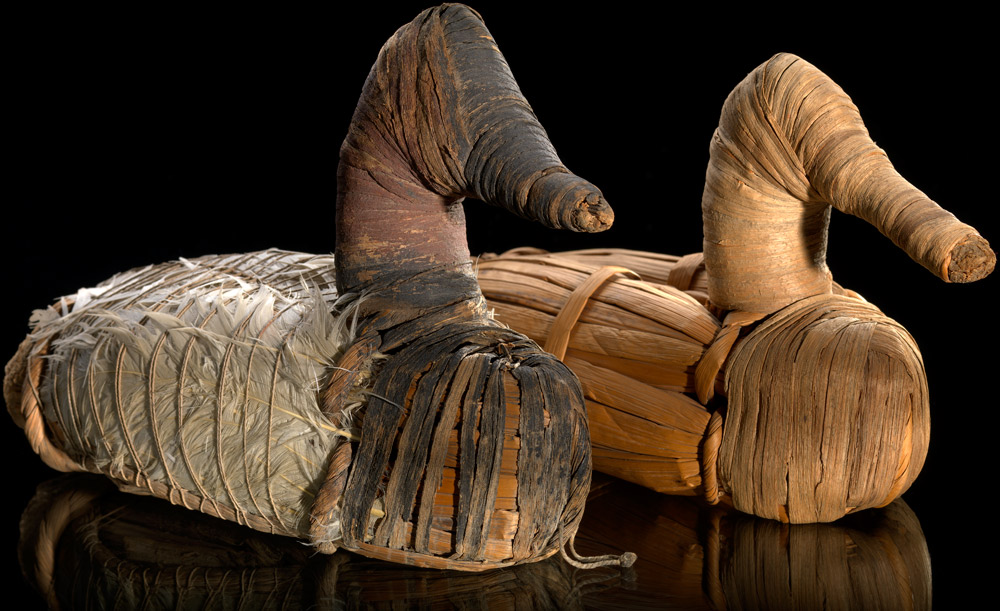
During the first world war, similar techniques were used, not to attract ducks, but to attract enemy fire with the goal of having the enemy’s gun emplacements reveal their location; they were referred as “Chinese troops” and took the form of wire-operated marionettes dressed as soldiers. By the second, entire, decoy train lines, convoys of truck, and air bases were deployed in order to divert enemy bombers (Forbes 2009: 108, 138). Today, many armies still employ inflatable dummies of military hardware in case of aerial attack (Telegraph 2011).
In decoys, however, we witness the radical reversibility of camouflage as a technique for evading the enemy sensorium. Specifically, camouflage, once perceived as such, signals that its bearer is an object of strategic value, turning it into a “sitting duck,” so to speak. We have already seen how Scott perfected his understanding of countershading and disruption by painting his own hunting decoys. During wartime, decoys are often painted in camouflage patterns so as to make them seem as if they are being hidden.
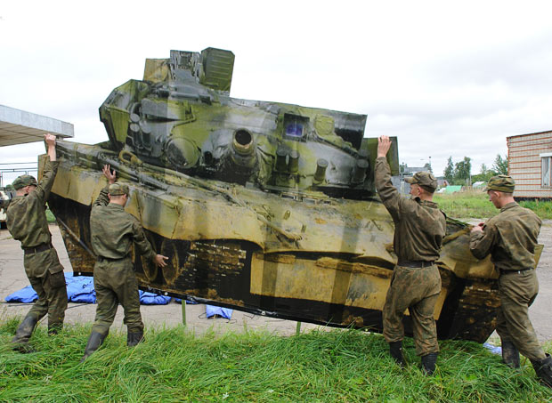
Recurrence
Mimicry, disguise, and decoy are respectively the micrological, inverse, and reverse forms of camouflage, but they can also be integrated into wider, diachronic forms of camouflage as fieldcraft: their presence alongside an instance of camouflage allows them to be folded into a higher order instance of camouflage. This notion is far simpler than it initially appears. Consider, for example, Len Lye’s 1942 film, Kill or be Killed, which was, during the second world war, both an instructional film for snipers and shown to the public for entertainment and education purposes. The film reenacts a duel between a German and an English sniper, running through the entire panoply of concordant methods of visual deception. The two snipers don their respective camouflage suits, but these suits serve only as partial corridors of concealment between the different niches in which they bunker down. Once each sniper sets up position, he rubs and decorates himself with the surrounding earth and foliage, mimicking particular plants or geological features, waiting until the enemy either comes into view or forces him to move to another perch. Ultimately, the English sniper kills his opponent, strips both himself and the enemy’s corpse, and switches the camouflage uniform, disguising the body as that of a English soldier. The enemy sniper is now a decoy and the English sniper guns down enemy soldiers attracted to the sight of a fallen, English soldier rather than alerted to danger by that of a dead German sniper. (Shell 2012: 143-153) Here, camouflage as a synchronic, fixed pattern on a snipers uniform enables camouflaged movements around and towards the enemy that incorporate techniques of mimicry, disguise, and decoy into effect.
Concept of Camouflage, Camouflage of Concepts
At the outset of their final book together, Deleuze and Guattari tell us that “there are no simple concepts.”
Every concept has components and is defined by them. It therefore has a combination [chifre]. It is a multiplicity, although not every multiplicity is conceptual… Every concept has an irregular contour defined by the sum of its components, which is why, from Plato to Bergson, we find the idea of the concept being a matter of articulation, of cutting and cross-cutting. The concept is a whole because it totalizes its components, but it is a fragmentary whole. (1994: 15)
Camouflage, as we have seen, also makes contours irregular by cross-cutting a thing with a multitude of heterogeneous elements, be these motley colors, intermingled semiochemical fragrances and stenches, scattered radio waves, or variegated, affective, political blocs. Just as in Deleuze, each disruptive element has its own history leading into its place in the assemblage that makes up the camouflaged field, a history that “zigzags, though it passes, if need be, through other problems or onto different planes.” (1995: 18) Moreover, for Deleuze and Guattari, concepts are planes of immanence which we populate with other concepts. They are, in this sense, recursive. Indeed, the most successful visual camouflages could serve as condensed illustrations of this principle insofar as they aim to camouflage their wearers whether viewed from nearby or afar. Because macrological patterns work better from afar and micrological ones from up close, the latest camouflage patterns use a “dithering effect,” a computer generated form of noise that breaks up the boundaries between blocks of colors. This dithering effect is recurrent insofar as, from a distance, where blocks of intertwined colors are perceived as singular colors, a meta-pattern is planned for, so that these blocks form another, disruptive pattern. This is observable in the latest forms of “digital camouflage,” such as the American MARPAT and Canadian CADPAT patterns, and the Italian Vegetato pattern even goes so far as to use fractal geometry in an effort to make this dithering effect infinitely recursive.
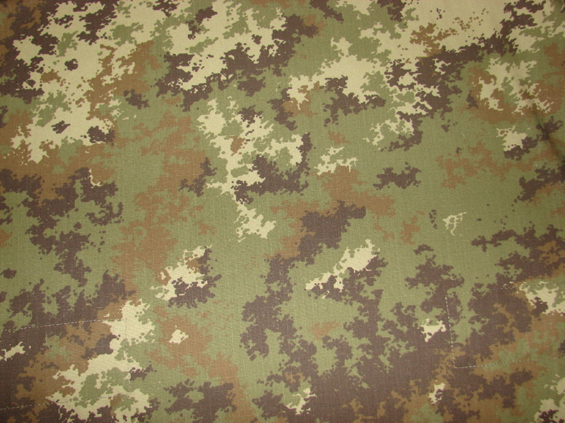
Camouflage in abstracto, as we have already laid out, is equally nested: a synchronic, relatively fixed camouflage pattern on a military uniform, for example, becomes articulated in a diachronic camouflaged consciousness that incorporates mimicry, disguise, and decoy in a stealthy dance. A movement, a camouflaged polity, is made up of elements bound only by plausible deniability: parliamentary parties and public media activists form a disruptive pattern with underground youth subcultures and militant wings that are themselves camouflaged insofar as the repressive apparatus’ lines of perception are deflected and distributed by clandestine cells or segmentary relations.
Camouflage nevertheless falls short of conceptuality in Deleuze and Guattari’s sense, which is not to say that it is non-conceptual. For Deleuze and Guattari, to create a concept is to awaken an other, a personae that looks back at its creator.
No longer being either subject of the field or object in the field, the other person will become the condition under which not only subject and object are redistributed but also figure and ground, margins and center, moving object and reference point, transitive and substantial, length and depth. The Other Person is always perceived as an other, but in its concept it is the condition of all perception, for others as for ourselves. (1994:30)
Yet camouflage expressly inhibits the perception of figure, margins, and length through disruption, and ground, center, and depth through countershading. Whereas, for Deleuze and Guattari, the philosopher is a “joiner,” the camoufleur seeks to only to disjoin. We see a concept before we grasp it: to see an object is to know it only partially, perspectivally, whereas to grasp that object is to invaginate it in a tactile field - to cup it in our hands, put it in our mouths or orifices and run it through our intestines, veins, and neurons - so that it is known or even lived from all sides. The camouflage object, however, never appears as what is ultimately grasped: the spectral silhouette, the aggregate of holes and shadows, proves to be a three-dimensional creature – a camouflaged guerilla, owl, or concept. If we finally grasp a camouflaged concept, it is never the concept we were grasping for. The camouflaged concept, if there is such a thing, is only that which is grasped seemingly spontaneously, the ex nihilo eureka moment or the grande idée we never wrote down and promptly forgot.
If conceptuality is the “condition of all perception for others as for ourselves,” then camouflage can attain concepthood only parasitically as it necessarily exists outside perception: once the camouflaged thing is perceived, it is no longer a camouflaged thing. Camouflage is only liminally conceptual, always at the threshold, just as a virus is part way between the animate and inanimate. The philosopher’s concept is a demonic invocation: on a flattened surface, the sorceress assembles her concept out of spare parts and tangled stories, and then a face peers back at her and speaks:
There is, at some moment, a calm and restful world. Suddenly a frightened face looms up that looks at something out of the field. The other person appears here as neither subject nor object but as something that is very different: a possible world (1994: 29)
Camouflage, too, is a means to a possible world, but one which contends with an enemy sensorium where to perceive is to destroy. The camouflaged concept’s face is fleeting, transient, a sharpened fold between real surfaces and illusory bodies. Its faces are those seen in passing, peering out of rock formations, tree bark, or clouds in random elemental resemblances which are there one moment, gone the next.
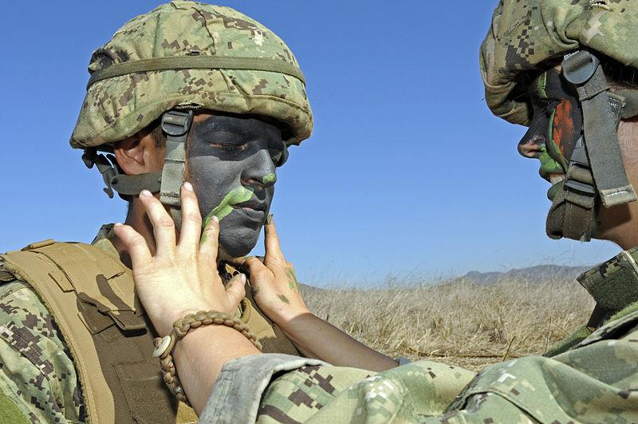
Bibliography
Deleuze, Gilles and Félix Guattari
1987 A Thousand Plateaus: Capitalism and Schizophrenia. Brian Massumi, trans. Minneapolis: University of Minnesota Press.
1994 What is Philosophy? Hugh Tomlinson and Graham Burchill, trans. Brooklyn: Verso.
Forbes, Peter
2009 Dazzled and Deceived: Mimicry and Camouflage. New Haven: Yale University Press.
Gramsci, Antonio
1971 Selections from the Prison Notebooks. Quintin Hoare and Geoffrey Smith, trans. New York: International Press.
1992 Prison Notebooks, Volume 1. Joseph Buttigieg and Antonio Callari, trans. New York: Columbia University Press.
1996 Prison Notebooks, Volume 2. Joseph Buttigieg and Antonio Callari, trans. New York: Columbia University Press.
2007 Prison Notebooks, Volume 3. Joseph Buttigieg and Antonio Callari, trans. New York: Columbia University Press.
Haug, Wolfgang
2000 Gramsci’s Philosophy of Praxis. Socialism and Democracy 14.1.
Schnapp, Jeffery
2006 Mob Porn in Crowds. Jeffery Schnapp and Mathew Tiew, eds. Stanford: Stanford University Press.
Stoler, Ann
2002 Carnal Knowledge and Imperial Power. Berkley: University of California Press.
1995 Race and the Education of Desire. Durham: Duke University Press.
Ranciere, Jaques
2010 Dissensus: On Politics and Aesthetics. Steven Corcoran, ed. London: Bloomsbury.
Shell, Hanna Rose
2012 Hide and Seek: Camouflage, Photogrpahy and the Media of Reconnaissance. New York: Zone Books.
Taussig, Michael
2007 Zoology, Magic, and Surrealism in the War on Terror. Critical Inquiry. 34, winter supplement. Chicago: University of Chicago Press.
Thayer, Abott
1909 Concealing-coloration in the animal kingdom: an exposition of the laws of disguise through color and pattern. New York: Macmillan.
The Economist
2011 Capitalism and its Critics: rage against the machine. Oct 22nd.
The Telegraph
2011 Russia’s inflatable decoy weapons.
Uroskie, Andrew
2006 Far Above the Madding Crowd: The Spatial Rhetoric of Representation in Crowds. Jeffery Schnapp and Mathew Tiew, eds. Stanford: Stanford University Press.
Virilio, Paul
1989 War and Cinema: the logistics of perception. Brooklyn: Verso.
Zahir Janmohamed
2013 How Nahendra Modi uses India’s rich heritage as political camouflage. Al Jazeera. November 21.
http://america.aljazeera.com/articles/2013/11/21/in-india-using-heritageaspoliticalcamouflage.html
This unpublished essay is licensed under a Creative Commons Attribution 4.0 International License. The text may be downloaded and shared, but not altered or used for commercial purposes without the explicit consent of the author.